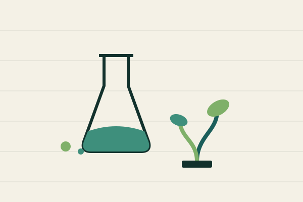
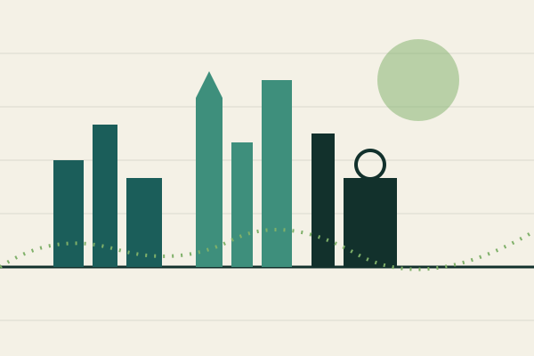

Money is often mistaken for wealth, but it is really just a unit of trust. A coin or a bank balance has no nutritional value, no shelter, no warmth — it only works because everyone downstream agrees to keep accepting it. That agreement is the entire invention. Long before coins, people traded promises: I owe you a favour, a season of grain, a share of the catch. Currency simply made the promise portable and comparable, so a fisherman's morning could be measured against a carpenter's afternoon without either one trusting the other personally.
What worries me is how easily that portability turns into a scoreboard for self-worth. A pay-cheque is a proxy for time and skill, not a verdict on a person's character, yet it gets treated as one constantly, in job interviews, in family dinners, in dating profiles. I think the healthier frame is to treat money the way a carpenter treats a good level: an instrument for checking whether a plan is balanced, not the plan itself. The measure of a life well spent was never going to fit on a receipt, and pretending otherwise is where a lot of unnecessary unhappiness comes from.

Fig. 2 — the seed and the flask.
Entry No. 02 — Food
GMO Food
Genetically modified crops get discussed like a single monolithic decision, "for" or "against," when in practice each trait is its own trade-off. A rice variety engineered to carry more vitamin A is not the same conversation as a soybean engineered to tolerate a specific herbicide, even though both wear the same three-letter label. The World Health Organization has noted that GM foods currently approved on international markets have passed safety assessments and are not likely to present risks for human health1 — a point that gets lost whenever the whole category is treated as inherently suspicious.
My own concern isn't the biology so much as the economics sitting underneath it: who owns the seed, and what happens to the farmer who can no longer save it season to season. A technology can be safe to eat and still concentrate too much power in too few seed companies. So I'd rather the debate move past "is it natural" — plenty of unmodified crops are the product of centuries of aggressive selective breeding anyway — and toward "who benefits, and who gets locked out." That's a much harder, much more useful question.
1. World Health Organization, Frequently asked questions on genetically modified foods.

Fig. 3 — a skyline, sketched forward eighty years.
Entry No. 03 — 2100
The View of World in 2100
Most predictions about the distant future say more about the year they were written in than the year they claim to describe. The 1960s imagined 2100 full of flying cars because the 1960s were obsessed with speed; today's forecasts lean toward climate adaptation and quiet automation because that's what's on our minds now. I try to hold my own guess loosely for the same reason, but if I had to bet, I'd say 2100 looks less like a single gleaming city and more like a patchwork — some regions still recognisably today, others rebuilt entirely around water scarcity, heat, and migration.
The one trend I feel more confident about is that "developed" and "developing" will stop being useful labels. Energy is decentralising fast, and a village with a solar micro-grid in 2100 may be less fragile than a city on a strained legacy grid. I'd rather plan for a future that's unevenly strange than one that's uniformly shiny — it's a more honest starting point, and it's the one that actually shows up in most of history if you zoom out far enough.